FIRST LIGHT D02 — P2D-R2 Final Candidate
当前候选与授权 007 场景参考。点击任意图片查看原始分辨率。 灯光、天空、曝光、雾和三台固定相机保持冻结；远山植被使用低细节、无阴影、无碰撞的远景轮廓，并启用 1.1–1.45 km 裁剪。
Reload · FOV 80
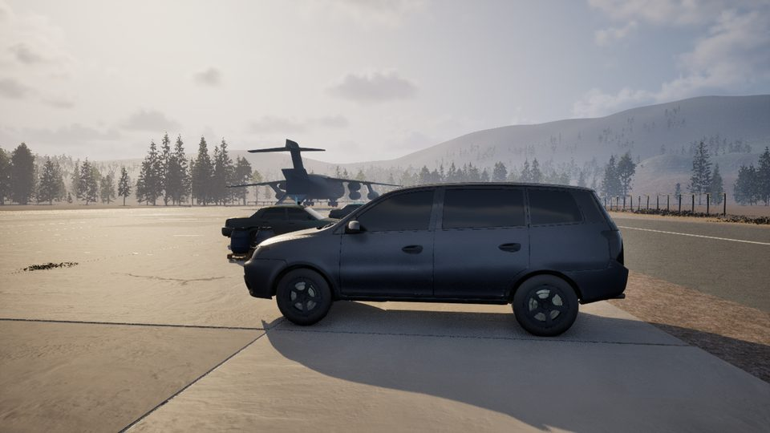
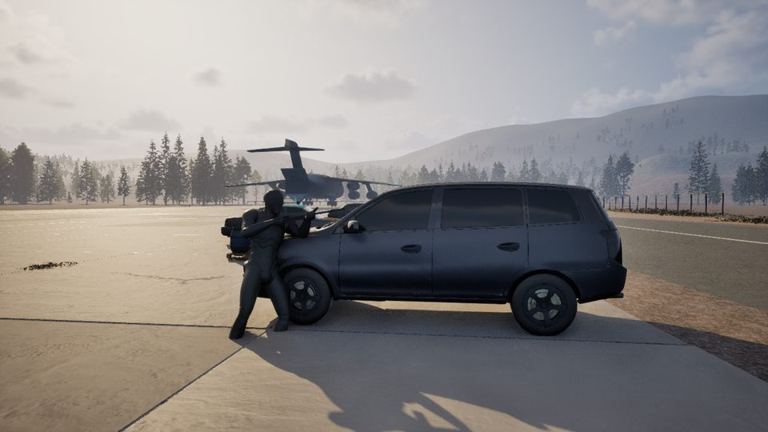
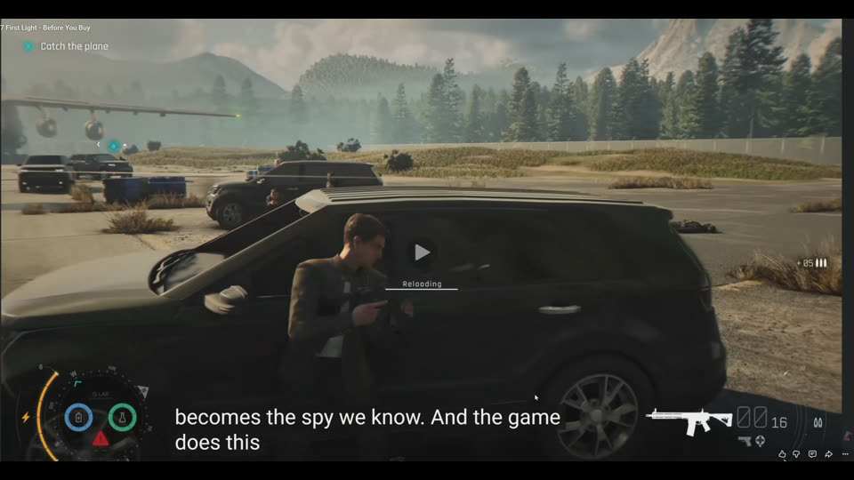
Vault · FOV 80
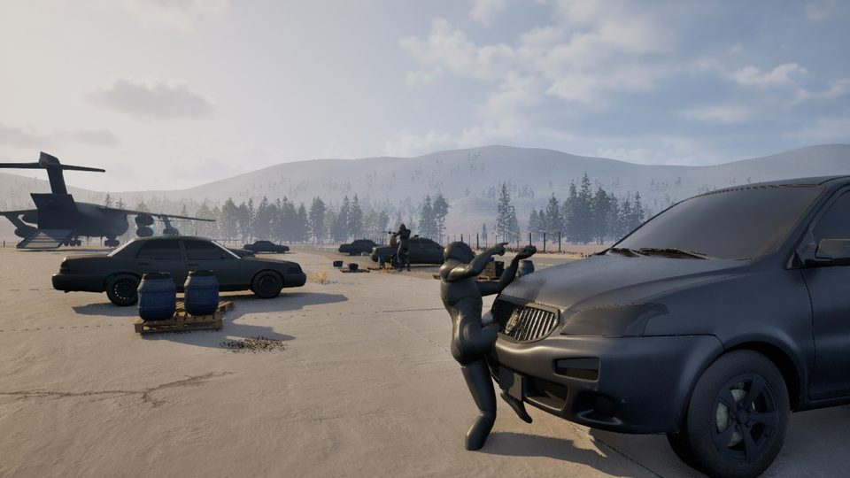
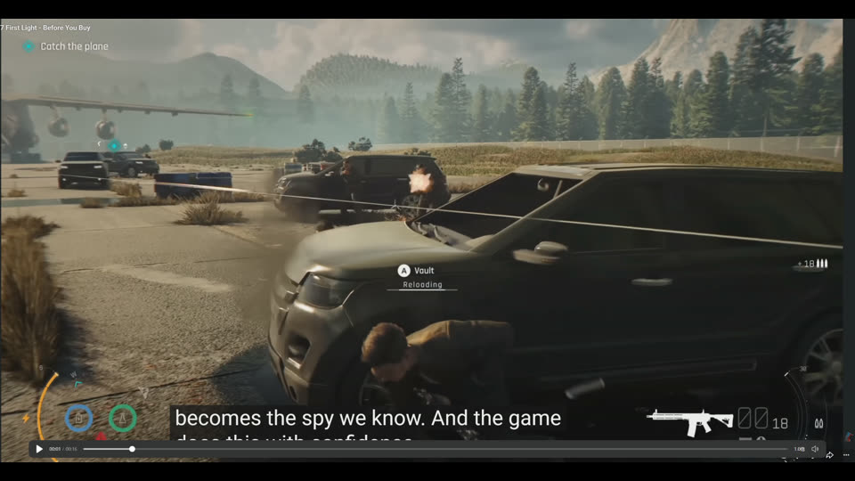
Aim · FOV 65
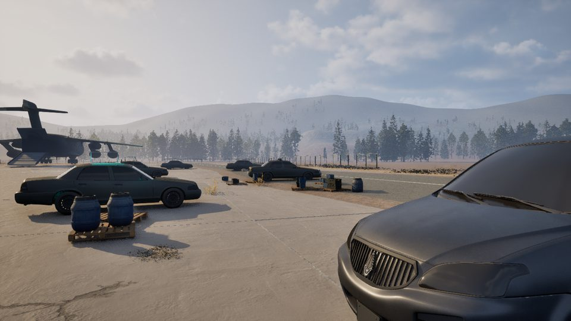
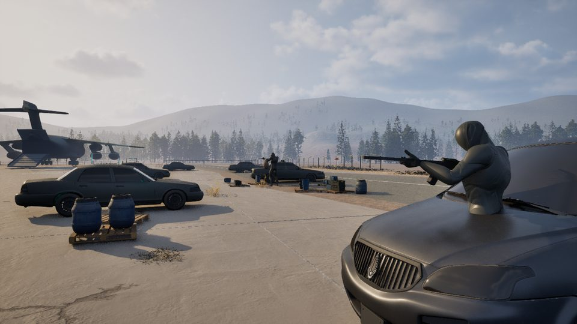
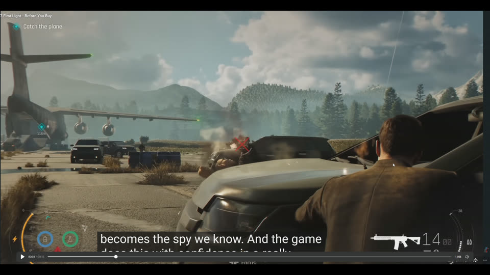
版本与缩略图验证
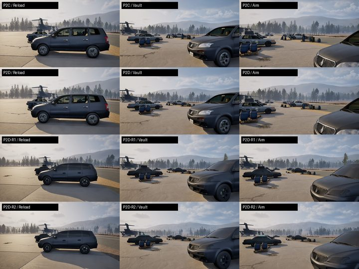
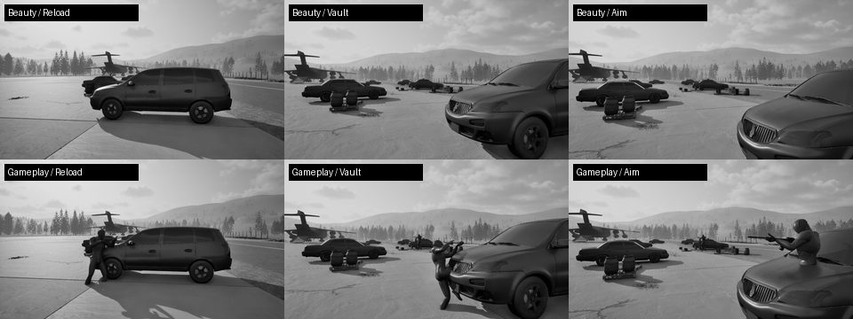
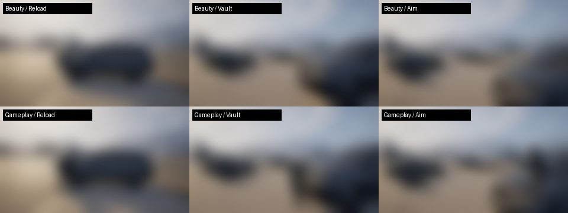
地面与肩部生态细节
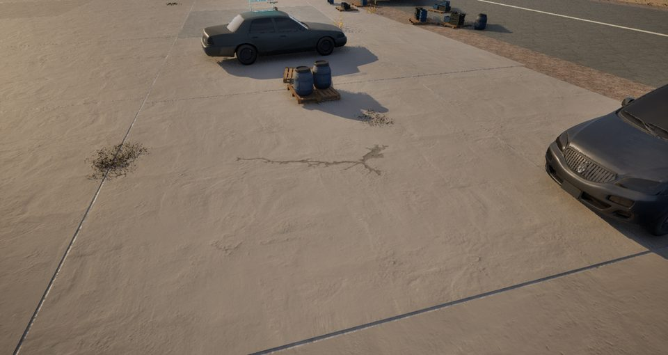
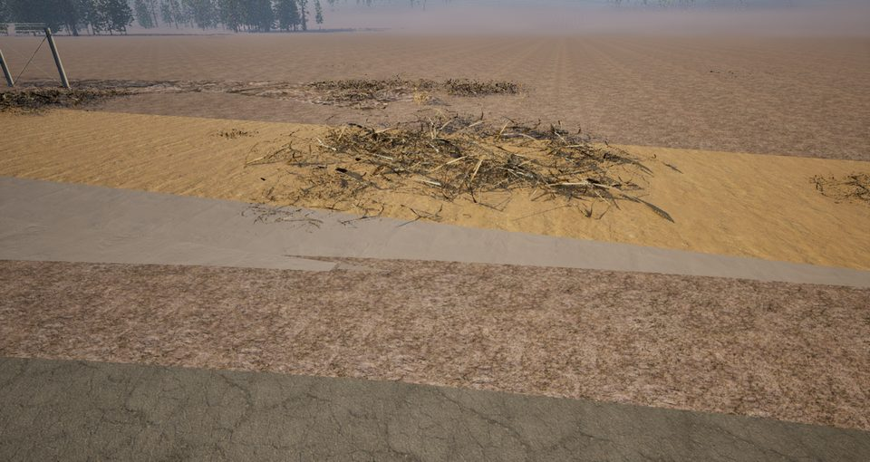